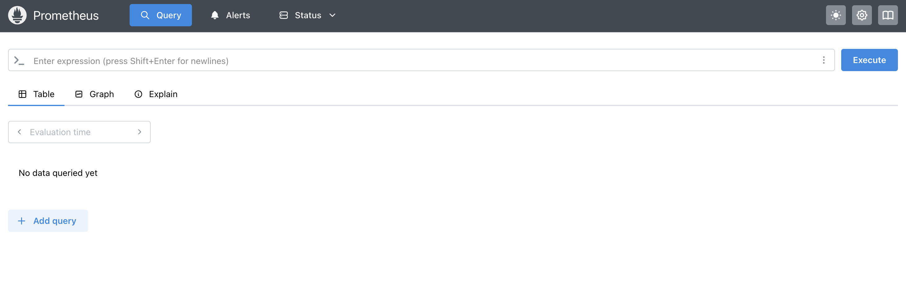
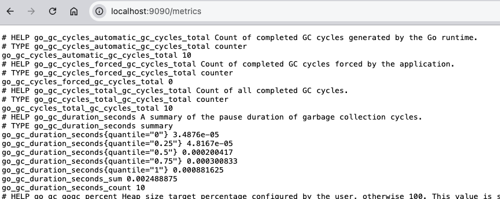
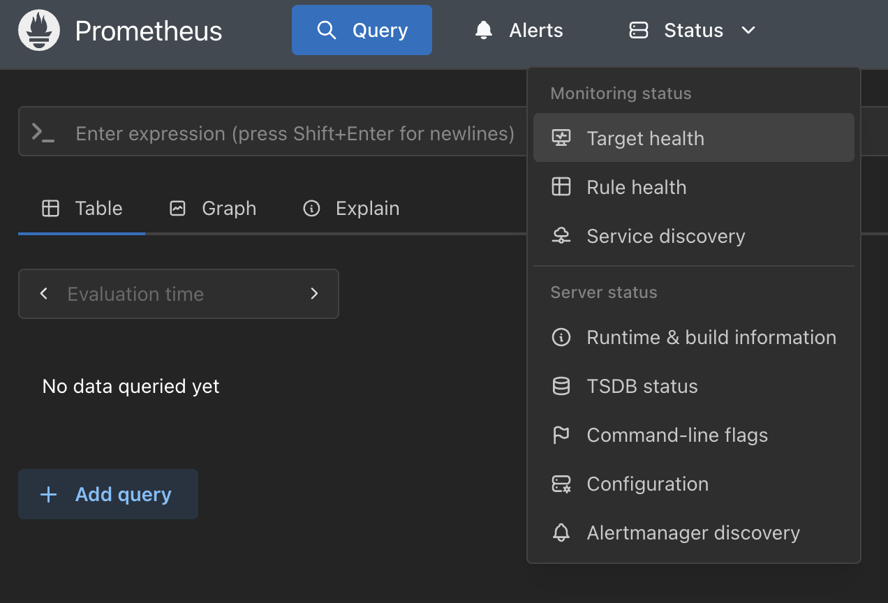
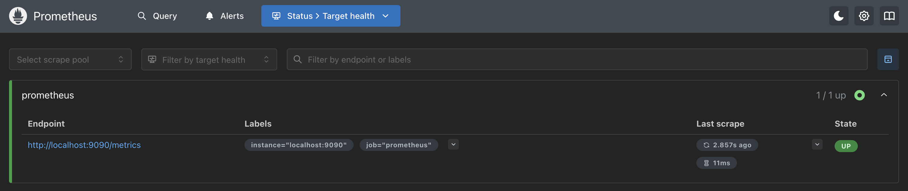
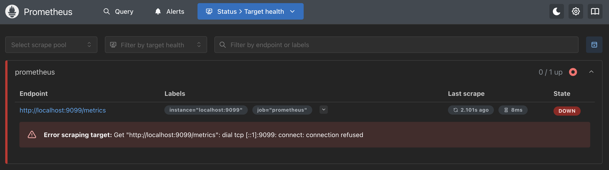
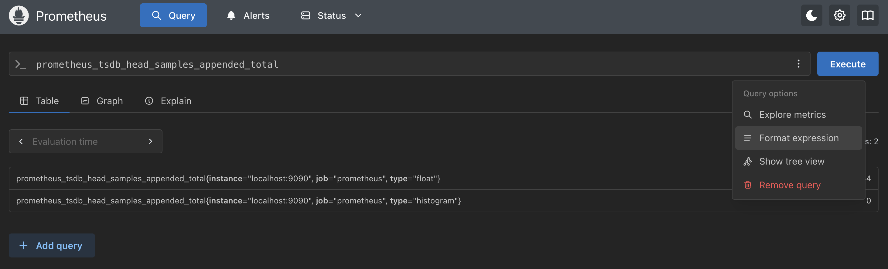
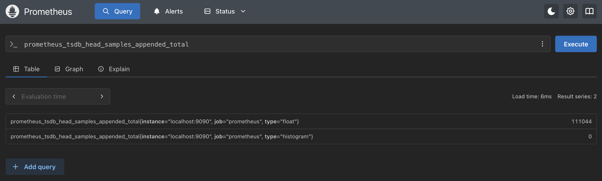
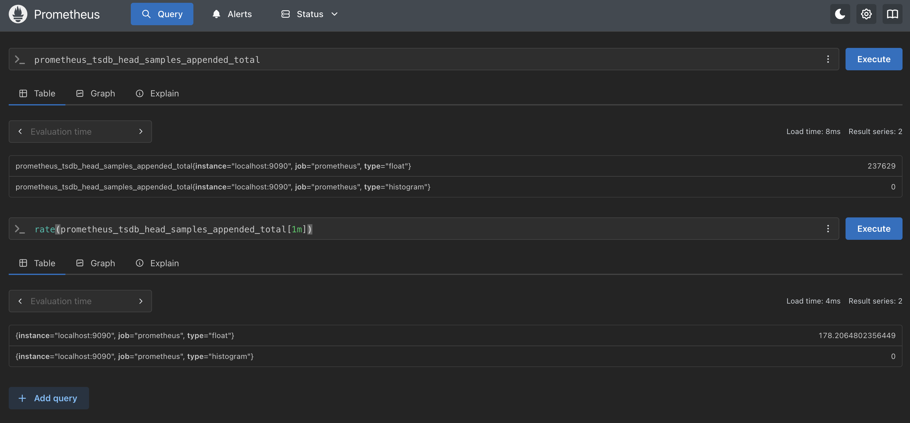
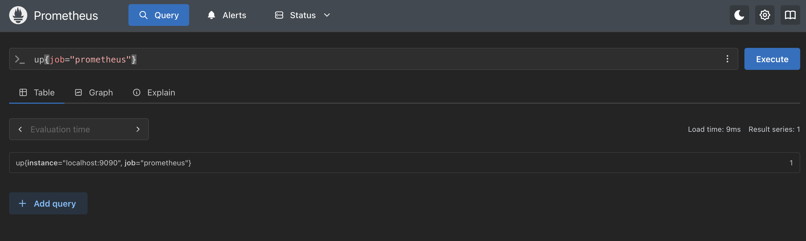

Lab 2 - Installing Prometheus (Kubernetes)
Lab Goal
This lab guides you through installing Prometheus on a local Kubernetes (k3s) cluster using Helm, configuring, and running it to start gathering metrics.
Prometheus - Kubernetes installation notes
This lab guides you through installing Prometheus on a local Kubernetes cluster provided by
Rancher Desktop, an open source
desktop application that ships a lightweight Kubernetes distribution (k3s) and works on Mac
OS X, Linux, and Windows systems. This workshop assumes you have installed and started it with
Kubernetes enabled in the preferences:
The rest of this lab is pictured using Mac OS X, but it is assumed you have enough knowledge of your Linux or Windows systems to be able to achieve the same results. Also note that any other local Kubernetes cluster works here (minikube, kind, Docker Desktop), but we leave you to sort out the details.
The rest of this lab is pictured using Mac OS X, but it is assumed you have enough knowledge of your Linux or Windows systems to be able to achieve the same results. Also note that any other local Kubernetes cluster works here (minikube, kind, Docker Desktop), but we leave you to sort out the details.
Prometheus - Verifying tooling installation
To start with a working Kubernetes installation, you should see the following results for the
commands shown (note versions shown might differ for you):
$ kubectl config current-context
rancher-desktop
$ kubectl get nodes
NAME STATUS ROLES AGE VERSION
lima-rancher-desktop Ready control-plane,master 2d v1.25.16+k3s4
$ helm version
version.BuildInfo{Version:"v4.x"} <<<< MINIMUM VERSION REQUIRED
Now that you have the tooling, let's get started installing Prometheus on Kubernetes...
Installation - Make a project directory
The first step will be to open a console or terminal window and start with the command line
to create yourself an empty workshop directory, something like this:
$ mkdir workshop-prometheus
$ cd workshop-prometheus
Installation - Adding the Helm repository
The Prometheus community maintains a Helm chart that packages everything needed to run
Prometheus on Kubernetes. Add the repository and check what it offers:
$ helm repo add prometheus-community https://prometheus-community.github.io/helm-charts
"prometheus-community" has been added to your repositories
$ helm repo update
...
...Successfully got an update from the "prometheus-community" chart repository
Update Complete. ⎈Happy Helming!⎈
$ helm search repo prometheus-community/prometheus --version 29.20.0
NAME CHART VERSION APP VERSION DESCRIPTION
prometheus-community/prometheus 29.20.0 v3.13.1 Prometheus is a monitoring system...
Setup - A workshop values file
Using any editor you like, create a file named
workshop-values.yaml. This is
how you hand your own configuration to the Helm chart. Start with the server settings and switch
off the extra components we don't need, cut-and-paste (be sure to save the results):
# workshop config
server:
image:
tag: v3.13.1
global:
scrape_interval: 5s
scrape_timeout: 4s
persistentVolume:
enabled: false
service:
servicePort: 9090
# Keep the workshop lean - no extra components.
alertmanager:
enabled: false
kube-state-metrics:
enabled: false
prometheus-node-exporter:
enabled: false
prometheus-pushgateway:
enabled: false
Note the
scrape_timeout must be smaller than the
scrape_interval, the chart writes both out and Prometheus refuses to start
if the timeout is the larger of the two.
Setup - Trimming down the chart
The chart also ships a set of Kubernetes scrape jobs we don't need. Add this block at the very
bottom of the same
workshop-values.yaml file so that we only scrape
Prometheus itself, exactly like the other installation paths in this workshop:
# Scraping only Prometheus.
scrapeConfigs:
kubernetes-api-servers: { enabled: false }
kubernetes-nodes: { enabled: false }
kubernetes-nodes-cadvisor: { enabled: false }
kubernetes-service-endpoints: { enabled: false }
kubernetes-service-endpoints-slow: { enabled: false }
kubernetes-services: { enabled: false }
kubernetes-pods: { enabled: false }
kubernetes-pods-slow: { enabled: false }
prometheus-pushgateway: { enabled: false }
Watch the indentation. Only the nine job names are indented two spaces under
scrapeConfigs, everything else in this file sits at the left margin. If the
earlier alertmanager block accidentally ends up indented under here, it
silently does nothing, and you get all the extra components anyway.
Configuration - Some thoughts on setup
Normally you are monitoring other targets over HTTP and scraping their endpoints, but we are
going to start with Prometheus as it also exposes its own metrics endpoints. Monitoring your
Prometheus servers health is only an exercise for this workshop. Also note that scraping metrics
every 5 seconds is a bit over the top, commonly you would see 10-60 seconds, but we want our
data to flow in a steady stream for this workshop.
Configuration - The global section
Nothing to edit on this slide. Your values file is not the Prometheus configuration, the
chart translates it into one and stores it in a Kubernetes
ConfigMap mounted
at /etc/config/prometheus.yml. This is what the two lines you put under
server.global turn into, the global section holding
settings and default values:
# generated by the chart, not something you write
global:
evaluation_interval: 1m
scrape_interval: 5s
scrape_timeout: 4s
Note
evaluation_interval appeared on its own, that's a chart default we never
asked for.
Configuration - The scrape configs section
Also nothing to edit here. Still looking at the generated
/etc/config/prometheus.yml, the scrape_configs section is
where Prometheus is told which targets to scrape. We never wrote this, it is the chart's built-in
scrapeConfigs.prometheus entry, the one job we left switched on in the
previous slide, listing our target using a host:port format:
# generated by the chart, not something you write
scrape_configs:
- job_name: prometheus
static_configs:
- targets:
- localhost:9090
So the whole of
workshop-values.yaml is the two blocks from the two
Setup slides, nothing more. Note: production configurations would use
service discovery integrations to find targets, more on that later in this workshop.
Installation - Deploying the Helm chart
Now you can install Prometheus into its own
prometheus namespace. We use
helm upgrade --install instead of helm install so that
this exact command keeps working whether it is the first time you run it or the tenth:
$ helm upgrade --install workshop-prometheus prometheus-community/prometheus \
--version 29.20.0 \
--namespace prometheus --create-namespace \
-f workshop-values.yaml
Release "workshop-prometheus" does not exist. Installing it now.
NAME: workshop-prometheus
LAST DEPLOYED: Fri Jul 10 09:30:55 2026
NAMESPACE: prometheus
STATUS: deployed
REVISION: 1
Installation - A note on names
Naming the release
workshop-prometheus matters. The chart collapses the
name when the release already contains "Prometheus", so our resources land as
workshop-prometheus-server instead of the rather silly
workshop-prometheus-prometheus-server. Every command in this lab passes
-n prometheus explicitly. If you get tired of typing it, you can make that
namespace your default:
$ kubectl config set-context --current --namespace=prometheus
Installation - Verifying the deployment
Looking at what landed in the cluster we see the following:
$ kubectl get pods -n prometheus
NAME READY STATUS RESTARTS AGE
workshop-prometheus-server-6d4f8b9c7d-x2n8k 2/2 Running 0 45s
$ kubectl get svc -n prometheus
NAME TYPE CLUSTER-IP PORT(S) AGE
workshop-prometheus-server ClusterIP 10.43.112.87 9090/TCP 45s
Note the pod reports
2/2 containers, that's Prometheus itself plus a
configmap-reload sidecar we will make use of later.
Prometheus - Start your metrics engines!
The Prometheus server is already running inside the cluster, but it's not reachable from your
machine yet. A port-forward fixes that, mapping the service to the same
localhost:9090 the rest of this workshop expects:
$ kubectl port-forward -n prometheus svc/workshop-prometheus-server 9090:9090
Forwarding from 127.0.0.1:9090 -> 9090
Forwarding from [::1]:9090 -> 9090
Leave this running in its own terminal window for the rest of the workshop, closing it cuts off
your access to the Prometheus console.
Prometheus - Checking the server logs
In a second terminal we can watch the Prometheus server start up (scroll to view log):
$ kubectl logs -n prometheus -f deploy/workshop-prometheus-server -c prometheus-server
time=2026-08-03T13:13:08.587Z level=INFO source=main.go:1724 msg="updated GOGC" old=100 new=75
time=2026-08-03T13:13:08.587Z level=INFO source=main.go:789 msg="Leaving GOMAXPROCS=2: CPU quota undefined" component=automaxprocs
time=2026-08-03T13:13:08.587Z level=INFO source=memlimit.go:198 msg="GOMEMLIMIT is updated" component=automemlimit package=github.com/KimMachineGun/automemlimit/memlimit GOMEMLIMIT=5588486553 previous=9223372036854775807
time=2026-08-03T13:13:08.587Z level=INFO source=main.go:896 msg="Starting Prometheus Server" mode=server version="(version=3.13.1, branch=HEAD, revision=73ff57ce2b8161059ac7fe5188f03f1c3d22b29a)"
time=2026-08-03T13:13:08.587Z level=INFO source=main.go:901 msg="operational information" build_context="(go=go1.26.5, platform=linux/arm64, user=root@6a98665b49f7, date=20260710-08:21:41, tags=netgo,builtinassets)" host_details="(Linux 6.18.37-0-virt #1-Alpine SMP PREEMPT_DYNAMIC 2026-06-29 10:52:25 aarch64 workshop-prometheus-server-69b9bb94d-697bq (none))" fd_limits="(soft=1048576, hard=1048576)" vm_limits="(soft=unlimited, hard=unlimited)"
time=2026-08-03T13:13:08.646Z level=INFO source=web.go:727 msg="Start listening for connections" component=web address=0.0.0.0:9090
time=2026-08-03T13:13:08.650Z level=INFO source=main.go:1456 msg="Starting TSDB ..."
time=2026-08-03T13:13:08.651Z level=INFO source=tls_config.go:354 msg="Listening on" component=web address=[::]:9090
time=2026-08-03T13:13:08.651Z level=INFO source=tls_config.go:357 msg="TLS is disabled." component=web http2=false address=[::]:9090
time=2026-08-03T13:13:08.651Z level=INFO source=head.go:709 msg="Replaying on-disk memory mappable chunks if any" component=tsdb
time=2026-08-03T13:13:08.651Z level=INFO source=head.go:795 msg="On-disk memory mappable chunks replay completed" component=tsdb duration=792ns
time=2026-08-03T13:13:08.651Z level=INFO source=head.go:803 msg="Replaying WAL, this may take a while" component=tsdb
time=2026-08-03T13:13:08.652Z level=INFO source=head.go:898 msg="WAL segment loaded" component=tsdb segment=0 maxSegment=0 duration=76.25µs
time=2026-08-03T13:13:08.652Z level=INFO source=head.go:935 msg="WAL replay completed" component=tsdb checkpoint_replay_duration=15µs wal_replay_duration=83.167µs wbl_replay_duration=125ns chunk_snapshot_load_duration=0s mmap_chunk_replay_duration=792ns total_replay_duration=106.25µs
time=2026-08-03T13:13:08.652Z level=INFO source=main.go:1477 msg="filesystem information" fs_type=EXT4_SUPER_MAGIC
time=2026-08-03T13:13:08.652Z level=INFO source=main.go:1480 msg="TSDB started"
time=2026-08-03T13:13:08.652Z level=INFO source=main.go:1678 msg="Loading configuration file" filename=/etc/config/prometheus.yml
time=2026-08-03T13:13:08.652Z level=INFO source=main.go:1094 msg="TSDB retention updated" duration=15d size=0B percentage=0
time=2026-08-03T13:13:08.653Z level=INFO source=main.go:1717 msg="Completed loading of configuration file" db_storage=8.417µs remote_storage=1.041µs web_handler=167ns query_engine=542ns scrape=335.375µs scrape_sd=15.75µs notify=625ns notify_sd=375ns rules=53µs tracing=2.459µs filename=/etc/config/prometheus.yml totalDuration=503.75µs
time=2026-08-03T13:13:08.653Z level=INFO source=main.go:1441 msg="Server is ready to receive web requests."
time=2026-08-03T13:13:08.653Z level=INFO source=manager.go:211 msg="Starting rule manager..." component="rule manager"
time=2026-08-03T13:13:10.810Z level=INFO source=main.go:1678 msg="Loading configuration file" filename=/etc/config/prometheus.yml
time=2026-08-03T13:13:10.811Z level=INFO source=main.go:1717 msg="Completed loading of configuration file" db_storage=5.041µs remote_storage=3.25µs web_handler=625ns query_engine=2.041µs scrape=110.125µs scrape_sd=18.583µs notify=1.959µs notify_sd=1.458µs rules=195.583µs tracing=4.709µs filename=/etc/config/prometheus.yml totalDuration=915.75µs
Prometheus - Adjusting settings live
To change the configuration you edit
Now let's see if our Prometheus server is up and running on our local machine by loading the status page in our browser at http://localhost:9090, noting it needs to run a little bit to collect some data from its own HTTP metrics endpoint.
workshop-values.yaml and run the exact
same helm upgrade --install command again. The
configmap-reload sidecar notices the updated ConfigMap and tells Prometheus
to reload itself, so there is no restart and no image to rebuild.Now let's see if our Prometheus server is up and running on our local machine by loading the status page in our browser at http://localhost:9090, noting it needs to run a little bit to collect some data from its own HTTP metrics endpoint.
Prometheus - The status page

Now try the dark mode feature by clicking on the half moon icon in the top right corner.
Prometheus - Status page (dark mode)

Now try the metrics endpoint
(http://localhost:9090/metrics)
directly in your browser.
Prometheus - Live metrics endpoint

Prometheus - Checking your targets
After you configure a new
prometheus target to scrape and (re)start the
Prometheus server, validate it's running correctly by going to the status page, using the
drop-down menu at the top labeled STATUS and selecting
TARGETS:

Prometheus - Checking your targets
This shows you a list of the targets, in our case just one, featuring the scrape configuration
details. The most important field here is the
STATE, where we want to see a
green UP:

Prometheus - Bad target state
Let's break our configuration and see what that looks like in the targets status page. To do this
open up your values file
workshop-values.yaml and add a
prometheus entry inside the existing
scrapeConfigs block to override the target port number as shown:
# Scraping only Prometheus.
scrapeConfigs:
prometheus: <<<< ADD THESE FOUR LINES
static_configs:
- targets:
- localhost:9099
kubernetes-api-servers: { enabled: false } <<<< LEAVE THE REST AS THEY ARE
kubernetes-nodes: { enabled: false }
...
Do not add a second
scrapeConfigs: line further down the file. YAML
quietly lets the last one win, which would throw away all the disabled jobs above and hand you
back every Kubernetes scrape job. Save and see next slide for applying the new configuration.
Prometheus - Apply a new configuration
Now apply the broken configuration by running the very same command you used to install, only
this time Helm upgrades the existing release instead of creating it:
$ helm upgrade --install workshop-prometheus prometheus-community/prometheus \
--version 29.20.0 \
--namespace prometheus --create-namespace \
-f workshop-values.yaml
Release "workshop-prometheus" has been upgraded. Happy Helming!
NAME: workshop-prometheus
NAMESPACE: prometheus
STATUS: deployed
REVISION: 2
Note the
REVISION number increased. Give the configmap-reload
sidecar a few seconds to pick up the change, no restart needed.
Prometheus - Verify bad target state
Back to the target state page, and we see that indeed the target we configured is broken:

Exercise: go back and fix this target before proceeding!
Prometheus - Exploring command-line flags
When you started Prometheus we mentioned a flag to point at our new configuration file. There is
a status page you can use to view all the flags that have been set (by your or default settings).
Using the drop-down menu again at the top labeled
STATUS and selecting
COMMAND-LINE FLAGS:

Prometheus - Exploring command-line flags
This shows you a long list of flags with their current values and a search field for locating
one you might be interested in:

Prometheus - Searching for a flag
By filling in a search query, you can narrow down the long list to a specific area. Let's
explore the flag value for
--config.file:

Note: on this Kubernetes path the value is
/etc/config/prometheus.yml, the
file the Helm chart rendered from your values into a ConfigMap.
Prometheus - Time series database status
Next, there is a status page you can use to view your time series database, or TSDB, status.
Using the drop-down menu again at the top labeled
STATUS and selecting
TSDB-STATUS:

Prometheus - Time series database status
This shows you some details for the time series being collected in an overview status line with
several tables below with cardinality status:

Prometheus - Exploring active configuration
Lastly, at least in this lab, you can verify the exact configuration being applied to your
Prometheus server. Using the drop-down menu again at the top labeled
STATUS
and selecting CONFIGURATION:

Prometheus - Exploring active configuration
This shows you your exact configuration, often including some defaults that you might not have
in your personal configuration file, yet are being used. There is even a handy copy-to-clipboard
button for you to grab it:

Prometheus - Using the expression tooling
You can navigate back to the expression browser that lets you query your time series data
by clicking on the menu entry
GRAPH. This is the default built-in query
interface for running Prometheus Query Language (PromQL) queries. Be sure you are in the
TABLE tab:

Prometheus - Total samples ingested
The
TABLE view provides the output of a query written using PromQL expression as
a series. It's less expensive to use than the other option, GRAPH, because you are
not plotting out the series answers in a graph. Without worrying about the PromQL used (we'll
explore that later in this workshop), lets show the total number of samples ingested by our
Prometheus server since it started:
# Copy this line below comments into the Expression field and
# click on the EXECUTE button on the right side of the screen.
#
prometheus_tsdb_head_samples_appended_total
Prometheus - Validating an expression
You will have noticed that there are three buttons to the right of the
EXPRESSION entry field. Click to show a menu with options. The first one can
be used to explore available metrics, the second to validate the expression you entered, and the
last one to show a tree view of complexer queries (this one is not complex). We'll just click
on the FORMAT EXPRESSION menu entry and if it's a good expression you get a
validation pop-up as shown below:


Prometheus - Execute the expression query
After validating our expression, run it by clicking on the
EXECUTE button:

Prometheus - Exploring the visualization
Let's explore by clicking on the
GRAPH tab. Note the features included to
visualize queries. I have adjusted my longer running server to look at 12h of data here, and
I am browsing the results:

Prometheus - Add another query
Go back to the
TABLE tab. Notice at the bottom there is a button
ADD QUERY, click on it to add another query panel in which we will execute
the following query expression. Let's look at the number of samples ingested per second averaged
over a 1m window of time:
# Copy this line below comments into the Expression field and
# click on the EXECUTE button on the right side of the screen.
#
rate(prometheus_tsdb_head_samples_appended_total[1m])
Prometheus - Execute the second query
You can now see multiple expressions are possible:

Prometheus - Exploring second visualization

Intermezzo - Warning about pages
If you now select any of the status pages from the
Pro tip: you might want to work using browser tabs.
STATUS menu at the top and
then return to the expression query page using the GRAPH menu entry. You will
notice that extra panels you might have added will be gone.Pro tip: you might want to work using browser tabs.
Prometheus - One last query
Assuming you went to another status page and back, we have a last query we will run here to
simulate the same query used to fill the system UP metric we viewed for our Prometheus target:
# Copy this line below comments into the Expression field and
# click on the EXECUTE button on the right side of the screen.
#
up{job="prometheus"}
Prometheus - Execute the UP query
You can now see the results as a boolean value suggesting it is really UP:

Prometheus - Exploring this silly visualization
This is a rather silly metric to visualize this way, but this is what it looks like going back
over 1d as my server was running during this lab's development (you can check my working hours!):

Lab completed - Results
Next up, exploring the query language...

Contact - are there any questions?
Eric D. Schabell
Director Evangelism
Contact: @ericschabell {@fosstodon.org) or https://www.schabell.org
Director Evangelism
Contact: @ericschabell {@fosstodon.org) or https://www.schabell.org